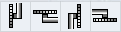
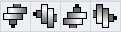
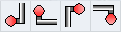
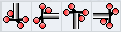

Beim Anlegen eines neuen Werkzeugs steht Ihnen eine Auswahl von Werkzeugtypen zur Verfügung. Der Werkzeugtyp bestimmt, welche Geometrieangaben erforderlich sind und wie diese verrechnet werden.
Sie wechseln in der vertikalen Softkeyleiste zwischen den folgenden Werkzeuggruppen:
-
Favoriten
-
Fräser
-
Bohrer
-
Drehstähle
-
Sonderwerkzeug
Werkzeugtypen
Folgende Werkzeuge werden im Fenster "Neues Werkzeug - Favoriten" angeboten:
Folgende Werkzeuge werden im Fenster "Neues Werkzeug - Fräser" angeboten:
Folgende Werkzeuge werden im Fenster "Neues Werkzeug - Bohrer" angeboten:
Folgende Werkzeuge werden im Fenster "Neues Werkzeug - Drehstähle" angeboten:
| | Software-Option Um die Y-Drehwerkzeuge anzeigen zu können, benötigen Sie die Option "Drehbearbeitung mit der Y-Achse". |
| Hinweis |
Die Werkzeuge Einstecher schräg, Abstecher schräg und Gewindestahl schräg sind nur an Drehmaschinen mit B-Achse verfügbar. |
Folgende Werkzeuge werden im Fenster "Neues Werkzeug - Sonderwerkzeuge" angeboten:
Typ | Bezeichner | Werkzeuglage |
|---|---|---|
700 | Nutsäge |  |
710 | 3D-Messtaster | |
711 | Kantentaster |  |
712 | Monotaster | |
713 | L-Taster |  |
714 | Sterntaster |  |
725 | Kalibrierwerkzeug | |
730 | Anschlag | |
731 | Pinole | |
732 | Lünette |